Progressive Digital Ads
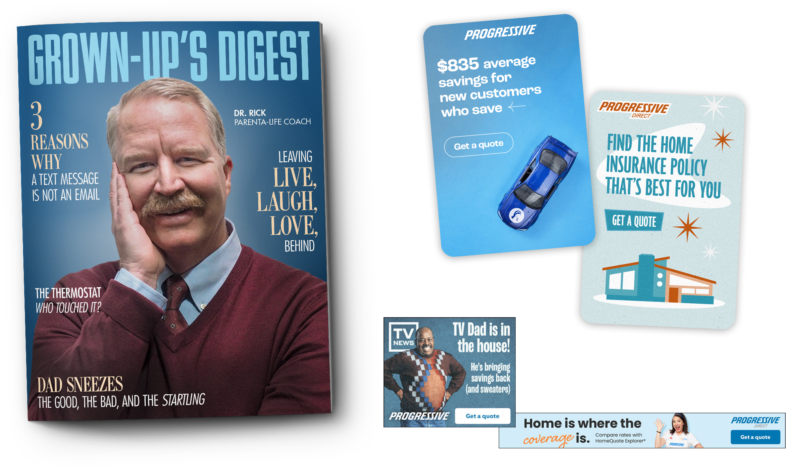
An in-depth showcase of the various digital ads I've had design and development involvement in at Progressive.
ROLES / Lead designer, front-end developer, managing standards and delivery
PLATFORMS / Meta, Pinterest, Twitter, Amazon, YouTube, Hulu, Snapchat, Nextdoor, Reddit, broad rotation web banners
Experience /
With over 8+ years of experience in organic and paid digital advertising at Progressive I have worked on a wide range of projects and campaigns on various platforms. In addition to these platforms I have also aided in designing and developing static and animated broad rotational display banners for the web.
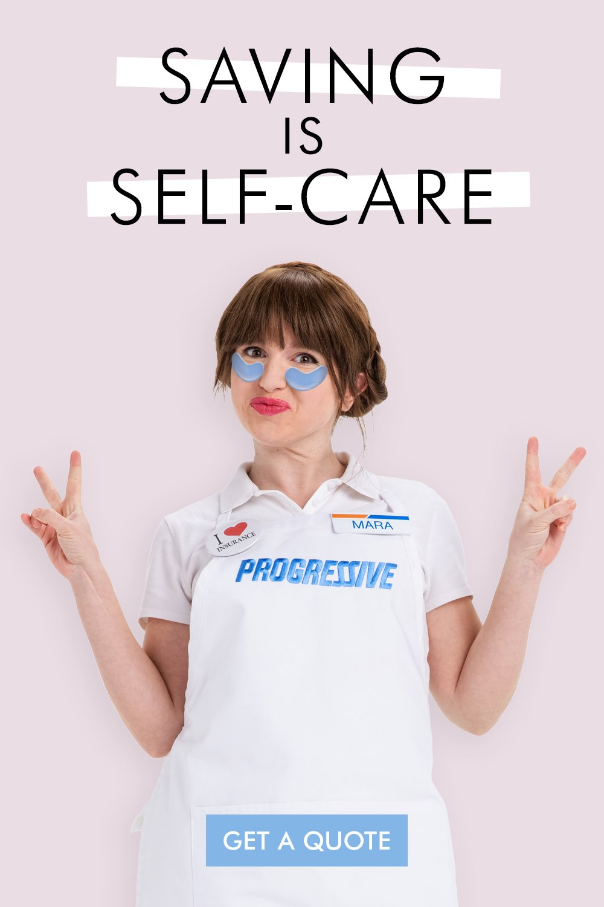
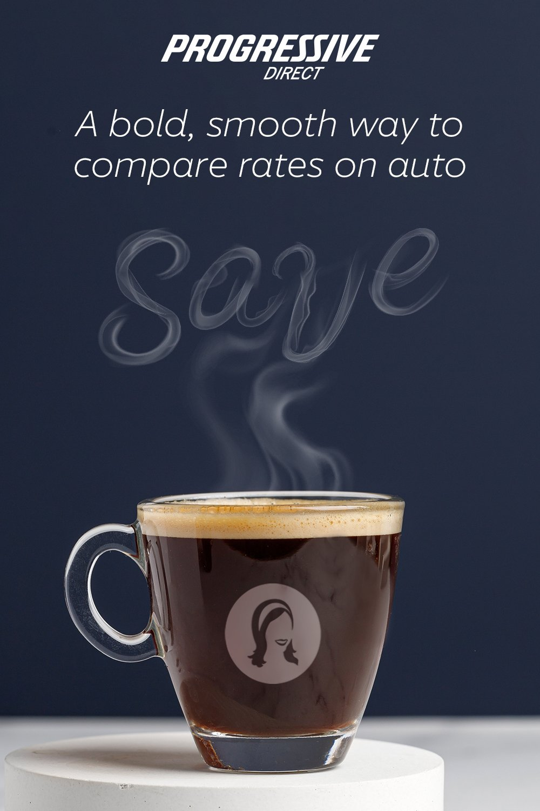
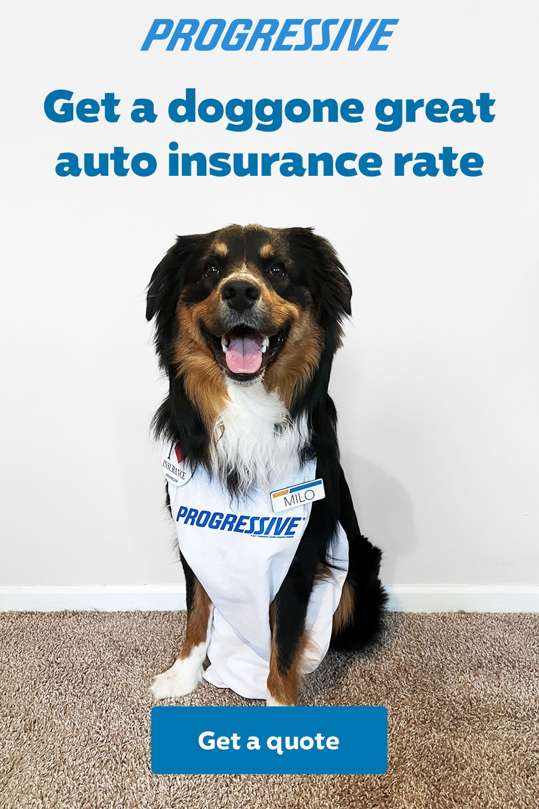
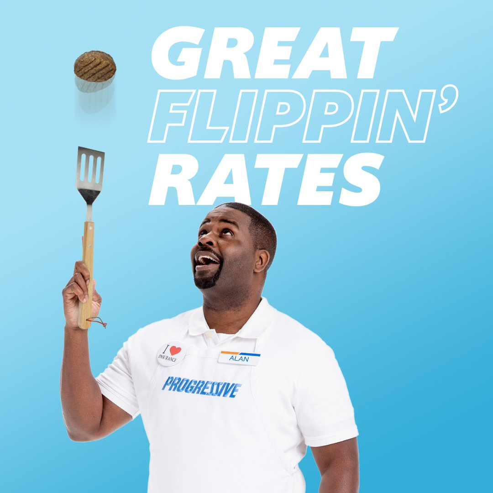
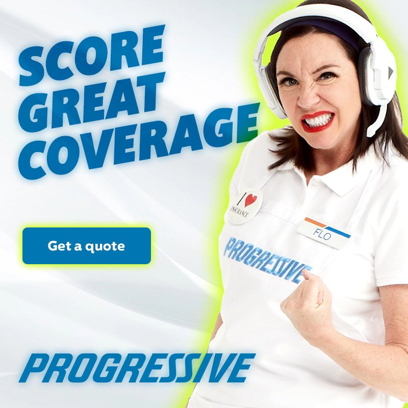

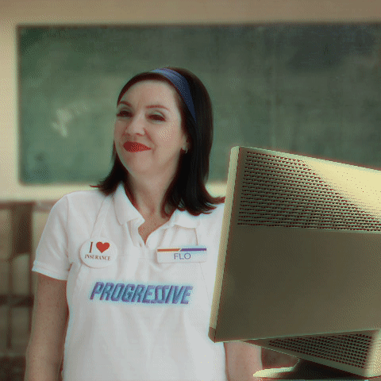
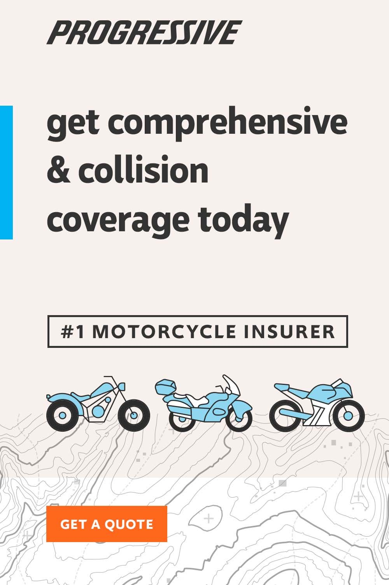
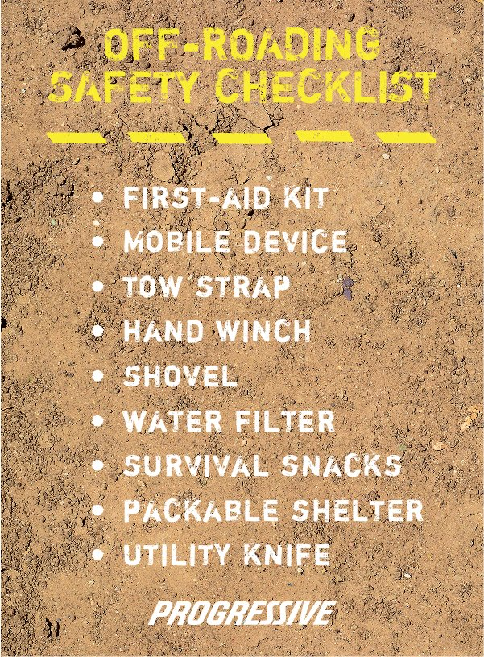
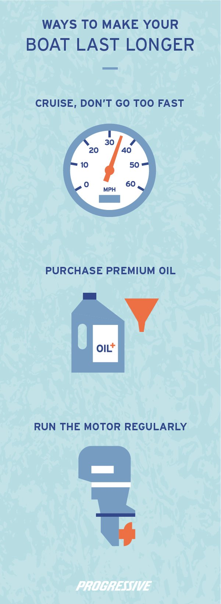
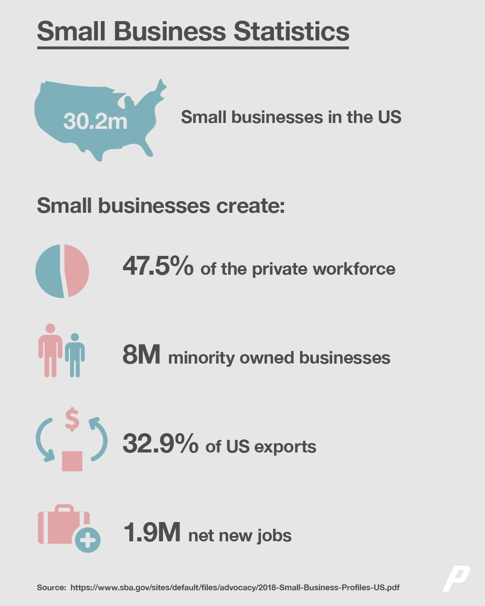
Development /
A large part of my role has included managing a set of standards for display banners to ensure consistency across the company. By use of HTML, CSS and JavaScript we are able to bring the ads to life through animation and entice the viewer to click, moving them forward in our quoting experience. As a team, we developed a custom CLI to compile and house all of our static and animated banners called the Display Ads Hub, where every ad is archived and shared from.
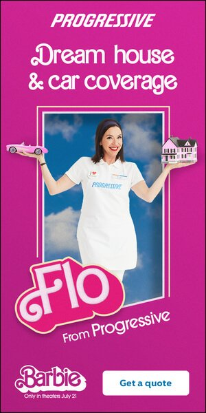
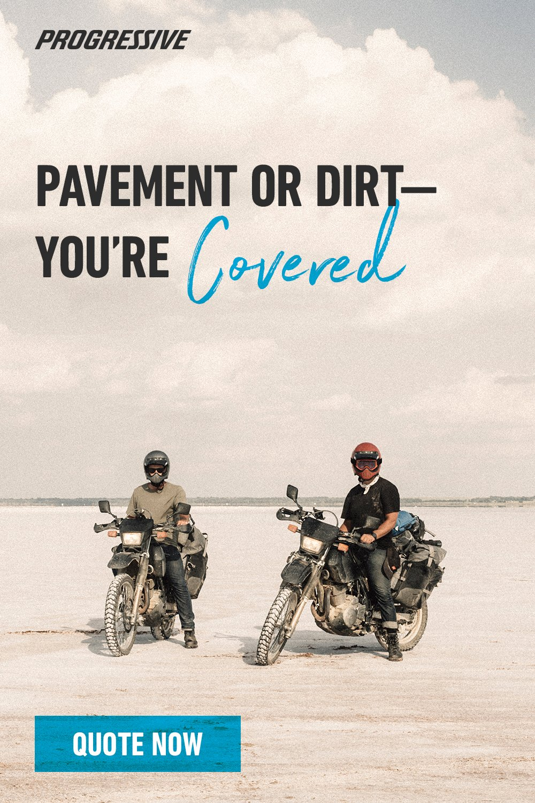
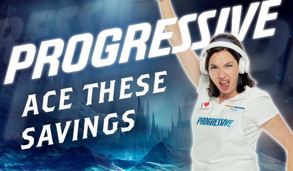